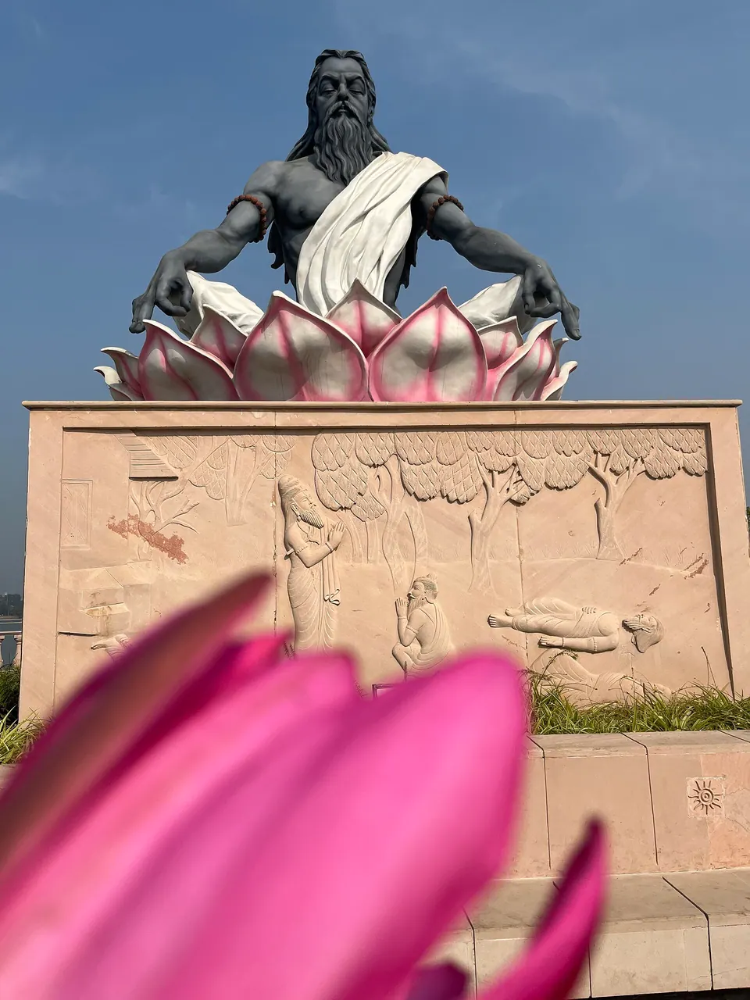
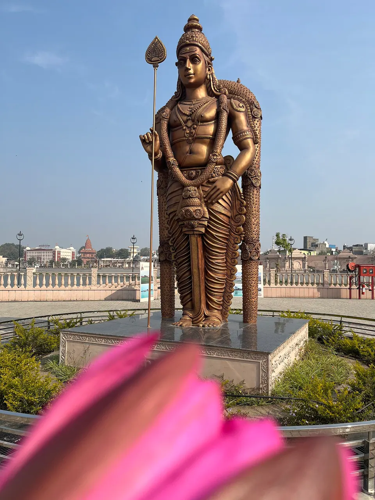

Mahakal Lok Corridor Ujjain: Timings, Entry and What to See

Mahakal Lok is the 900-metre-plus walkway of sandstone pillars, sculptures and murals that leads to Mahakaleshwar Temple in Ujjain. Walking it is free, it opens at 6 AM, and the last entry is at 10 PM before the Shayan aarti. For families, the calmest hours are early morning and the evening after sunset, when it is lit.
We are often asked whether Mahakal Lok is "part of darshan" or a separate visit. It is both a walk and a way in,. So we like to plan it properly, not squeeze it in between queues. Here is how we suggest doing it. For darshan and aarti timings, see our daily Mahakaleshwar schedule.
What Mahakal Lok actually is
Mahakal Lok (also called Shri Mahakal Lok) was dedicated to the nation by the Prime Minister on 11 October 2022, as reported by Outlook India. It stretches more than 900 metres and spreads around the old Rudra Sagar lake, which was revived as part of the project.
The Incredible India tourism page describes it as adorned with 192 statues, 53 murals and 108 stambhs (pillars), and MP Tourism gives the same counts. News reports from the opening days quoted other numbers for murals and statues, so we treat the exact figures as approximate. What matters to a visitor is simple: a long, open, carved stone walkway where the stories of Lord Shiva are told in sculpture.

Timings and entry: what the official pages say
MP Tourism says visiting hours start from 6 AM and the last entry closes at 10 PM before the Shayan aarti, and that there is no entry fee. Some guide sites list a slightly later closing time, so please verify on the day, especially during festivals.
The two gates
The corridor has two grand gateways: Nandi Dwar, named after Lord Shiva's bull and devoted companion, and Pinaki Dwar, named after the bow made for Shiva by Vishwakarma (both per MP Tourism). Ujjain Darshan notes that footwear and cloakroom counters sit near the entry plazas. Ask your host which gate is easiest from your stay on the day you go.
The Triveni Museum
Incredible India lists the Triveni Museum nearby, open 8 AM to 10 PM and closed on Tuesdays and government holidays, with a ticket of ₹20 for Indian citizens aged 10 and above. It is a good indoor stop if the afternoon sun is strong or someone needs to sit.
What to see as you walk
MP Tourism says the statues, murals and pillars narrate stories from the scriptures. You will also meet figures such as the Saptarishi and deities including Ganesha and Kartikeya along the way. Do not rush; the reward is in the small details.
- The pillars: 108 carved sandstone stambhs line the walkway.
- The murals: stories told in stone. Pause and tell them to the children in your own words.
- The sculptures: the Saptarishi, Ganesha, Kartikeya and many more, each a natural place to stop as a family.
- Rudra Sagar: the lake the corridor spreads around, a quiet view at dusk.

The best time to go
Early morning
From 6 AM the stone is cool and the light is soft. If you are not on a Bhasma Aarti schedule, this is the most peaceful walk, and elders tire less. If you are, our Bhasm Aarti guide explains the very early darshan.
After sunset
Incredible India highlights the evening illumination after sunset, which glows on the pillars and murals. Evenings are likely to be busier, so keep children close and agree a meeting point in case anyone is separated.
Festival days
On festival days such as Mahashivratri and during Shravan, crowds are larger and routes can change. If you can choose, avoid them for a first slow walk, and read the official notices on the temple website.
Watch before you go: a walk through Mahakal Lok
A few minutes of video shows the gateways, statues and lights better than any description, and helps elders picture the walking distance. These are independent travellers' videos, not ours and not the temple's, so treat timings and rules as they were on the day they filmed.
- ▶ Walk through the Mahakal Lok corridor YouTube · Travel With Bhavesh. The 900-metre corridor, its two grand gateways and the murals along the way.
- ▶ A spiritual journey to Mahakal Lok YouTube · vs study. The corridor at sunset, and the Shipra ghats in the evening.
- ▶ Mahakal darshan and Mahakal Lok tour YouTube · Traveling Baba. A full visit, including the best time to go and how Bhasma Aarti booking works.
- ▶ Official live darshan Shri Mahakaleshwar Temple website. Watch the aarti live from home, and find the official Bhasma Aarti booking.
A calm plan for the day
We suggest one corridor walk and one darshan, not both back to back. For example: darshan in the morning, rest at your stay, and the corridor after sunset. Or the corridor at 6 AM, breakfast, rest, then darshan at a less crowded hour. A family with young children may prefer only the open walk on day one.
With children and elders
- Wear light footwear you can slip off quickly, and carry a cloth bag for it.
- Carry water, a cap or dupatta for the sun, and any medicines.
- Agree on a meeting spot before you start, and share a WhatsApp location.
- Keep phones and cameras for the open corridor only; leave them behind before darshan (Ujjain Darshan).
For routes and day trips beyond the temple, see our travel page. If you are still choosing where to base yourself, read our guide to the best area to stay for Mahakal darshan.
Where to stay near Mahakal Lok
All five of our villas are within 2 km of Mahakaleshwar Jyotirlinga, about 6 minutes by car or 12 minutes on foot, and in-house guests get a complimentary Mahakal shuttle (up to 5 guests per trip). That makes it easy to walk the corridor in the cool hour, return to rest, and go again after sunset.
Rudrangan Suites


Our newest villa, opened in 2026, has designer finishes and garden seating. It has 3 bedrooms, sleeps 6, and starts from ₹5,200 per night. It is air-conditioned, wheelchair friendly, has a lift, welcomes pets, and has a kitchen with an induction cooktop for a cup of tea after the walk. Check-in is from 10:30 AM and check-out is at 9:30 AM, with a later check-out possible on request.
For other groups: Divinestay (3 bedrooms, sleeps 8, from ₹5,500) suits three generations, and AP Suite (2 bedrooms, sleeps 4, from ₹4,200) suits couples. See them all on our villas page. Our caretaker also explains the Bhasma Aarti booking process on your arrival evening; the temple permit itself is booked by you.
Frequently asked questions
Is there an entry fee for Mahakal Lok?
No. MP Tourism and the Incredible India site both say there is no entry fee to walk the Mahakal Lok corridor. Separate charges apply only for things like the Triveni Museum nearby (₹20 for Indian citizens aged 10 and above, as listed by Incredible India) or for a paid darshan or aarti pass at the temple itself.
What are the Mahakal Lok timings?
Official tourism pages say visiting hours start at 6 AM, with the last entry at 10 PM before the Shayan aarti. Some guide sites list slightly different closing times, and festival days can change everything. Please check the temple's official site on the day you plan to go.
How long does a walk through Mahakal Lok take?
The corridor is a little over 900 metres, so a steady walk takes only a few minutes of actual walking. Most families spend an hour or more with photographs, rest stops and the murals. Allow extra time with children or elders, and visit before or after darshan, not in the middle of the queue.
Can I take photographs and phones inside?
Photography is allowed in the open corridor, according to Ujjain Darshan. Phones and cameras are not allowed inside the temple and sanctum, so plan to leave them at the cloakroom counters or at your stay before darshan. Rules can change, so please follow the staff on site.
Is Mahakal Lok suitable for elderly parents?
It can be, with a slow plan. Go in the early morning or after sunset, carry water, wear easy footwear and agree to rest whenever someone wants. Do the corridor and the darshan at different times of the day. Our villas are within 2 km, so grandparents can return and rest in between.
Sources
- Incredible India: Mahakal Lok Corridor
- MP Tourism: Mahakal Lok Corridor
- Outlook India: inauguration of Mahakal Lok
- Ujjain Darshan: Mahakaleshwar temple timings and rules
Timings, prices and dates change, especially on festival days. Please verify before you travel with the official temple or government site.
If you are planning a visit and want a quiet base near the corridor, we would be glad to help you choose dates and rooms. You can also reach us on our contact page.
— Apoorv, Founder, AP Villas & Resorts